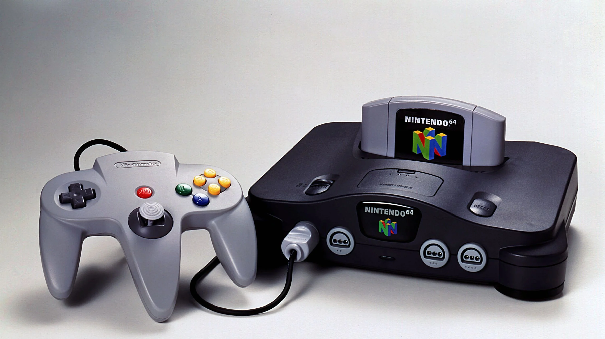

Nintendo Entertainment System / Famicom (1985)
 A Nintendo Entertainment System (NES) egy olyan 8-bites rendszer, ami a Nintendo egyik legsikeresebb konzolja volt. Nagyjából 61 millió darab kelt el belőle. Az NES egy teljes konzolnak számított, ami több különböző játékot tudott futtatni. A játékokat sárga kazettákon lehetett cserélgetni, amit boltokban árusítottak. Később, 1993-ban kapott egy újragondolt kinézetet is, amit Japánban AV Famicomnak, a többi régióban pedig New-Style NES-nek neveztek.
A Nintendo Entertainment System (NES) egy olyan 8-bites rendszer, ami a Nintendo egyik legsikeresebb konzolja volt. Nagyjából 61 millió darab kelt el belőle. Az NES egy teljes konzolnak számított, ami több különböző játékot tudott futtatni. A játékokat sárga kazettákon lehetett cserélgetni, amit boltokban árusítottak. Később, 1993-ban kapott egy újragondolt kinézetet is, amit Japánban AV Famicomnak, a többi régióban pedig New-Style NES-nek neveztek.
Super Nintendo Entertainment System / Super Famicom (1991)
A Super Nintendo Entertainment System (SNES) már sokkal fejlettebb grafikával, új kontrollerrel rendelkezett. Ennek már 16-bites rendszere volt. Habár sok kelt el belőle (~49 millió darab), a konkurens Sega Genesis megnehezítette a dolgát. Ahogy az NES, az SNES külsejét is újratervezték (1991), névszerint Super Famicom Jr. Japánban, máshol pedig New-Style SNES.
Nintendo 64 (1996)
 A Nintendo hatalmas javulást mutatott grafika téren, mostmár 3D-ben. Ezzel együtt új kontrollert is kapott, ami bevezette a modernebb joystick-et. Ez volt az első játékkonzol, amihez akár 4 kontrollert is lehetett ccsatlakoztatni. Körülbelül 32 millió példányt adtak el belőle. Lemez lejátszó és jelentősebb külső támogatások hiányában, illetve amiért később jelent meg, mint a többi konzol, nem is fogyott olyan jól, mint például a Playstation.
Nintendo GameCube (2001)
 A GameCube fejlettebb grafikával és újabb kontrollerrel érkezett. Mivel a játékokat ehhez már mini-lemezekre fejlesztették, ez volt az első (és egyetlen) Nintendo konzol, amihez szükség volt külső memóriakártyákra a játékfolyamat elmentéséhez. Bár nem a legkevésbé kelendő Nintendo konzol (~22 millió darab), esélye sem volt a rivális Playstation 2-höz mérve, ami a mai napig a világ legkelendőbb játékkonzolja.
A GameCube fejlettebb grafikával és újabb kontrollerrel érkezett. Mivel a játékokat ehhez már mini-lemezekre fejlesztették, ez volt az első (és egyetlen) Nintendo konzol, amihez szükség volt külső memóriakártyákra a játékfolyamat elmentéséhez. Bár nem a legkevésbé kelendő Nintendo konzol (~22 millió darab), esélye sem volt a rivális Playstation 2-höz mérve, ami a mai napig a világ legkelendőbb játékkonzolja.
Nintendo Wii (2006)
A Wii (RVL-001) új mozgásérzékelő kontrollerekkel, online rendszerrel, különböző multimédia csatornákkal és kicsit jobb grafikával jelent meg. Teljes mértékben támogatja a GameCube játékokat és kontrollereket, ami miatt ez volt az első viszafelé is kompatibilis Nintendo konzol. A mozgásérzékelő vezérlő sok alkalmi vevőt vonzott magával, ami több mint 101 millió példány eladását jelentette.
Nintendo Wii U (2012)
A Wii U-t újabb vezérlővel látták el, a Wii U GamePad-dal, ami egy 6,2”-es érintőképernyővel rendelkezett. Meg tudott jeleníteni 1080p HD felbontásban is (, de csak TV képernyőn). Két stílusban is megjelent, fehérben (8 GB tárhellyel) és feketében (32 GB tárhellyel). Volt benne egy NFC chip olvasó, amivel amiibo-kat lehetett beolvasni. Támogatja az összes Wii-re készült játékot és a Wii kontrollereket is. Az erőtlen hirdetéseknek köszönhetően, és mert kevés embernek jött be a GamePad ötlete, a Wii U lett a Nintendo legkevésbé eladott játékkonzolja 13 millió példánnyal.
Nintendo Switch (2017)
A Switch egy új hibrid formátumú egyben kézi és szobai játékkonzol. Egy olyan kézi konzolról van szó, amit akár csatlakoztatni is lehet TV kijelzőre egy dokkoló segítségével. Konzolról leválasztható kontrollerekkel rendelkezik, amik akár egy markolatba helyezhetők vagy egyszerűen a játékos két kezében is használhatók. A Wii U bukása után a Nintendo biztosra ment a hibák kiküszöbölésével. 2021 végéig több, mint 103 milló darab kelt el belőle, ami az eddigi legtöbbet eladott Nintendo játékkonzol. 2019 augusztusában érkezett hozzá egy javított verzió, egy hónappal később pedig a Switch Lite, ami csak kézi konzolként funkcionál. 2021 októberében jelent meg a Switch OLED model, ami az LCD képernyőt leváltotta egy nagyobb OLED kijelzőre.